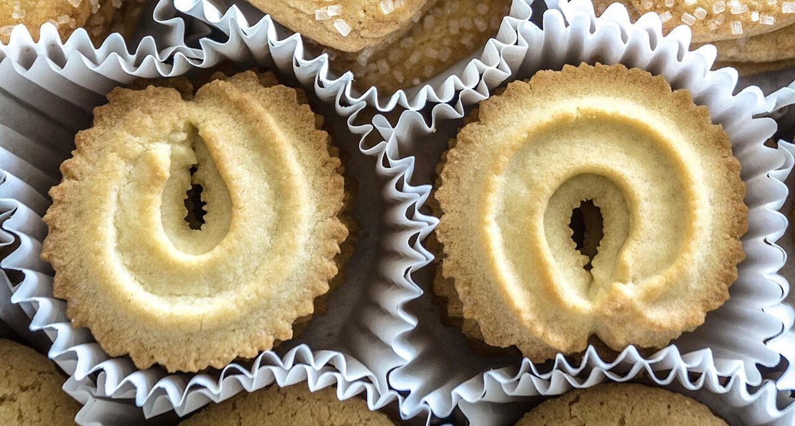
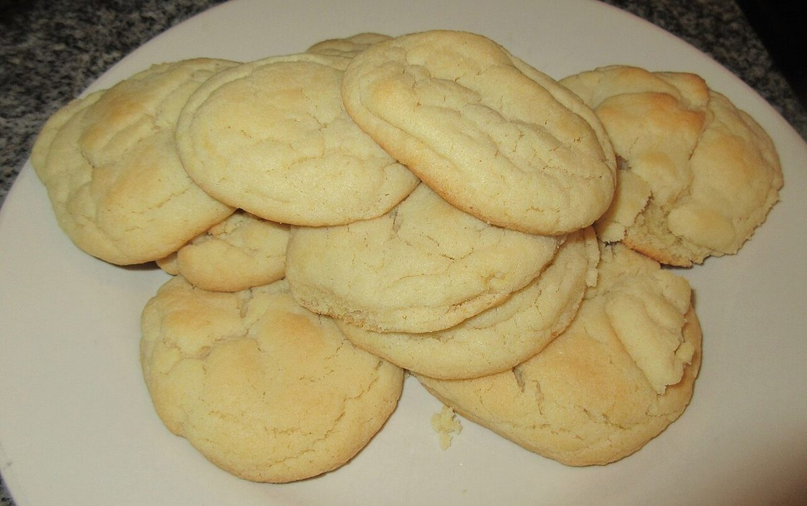
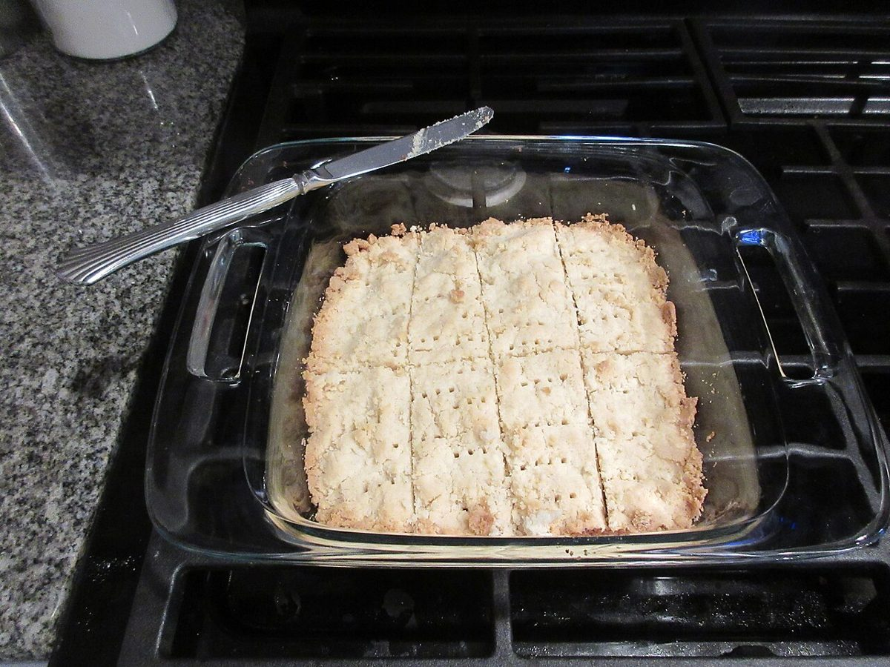
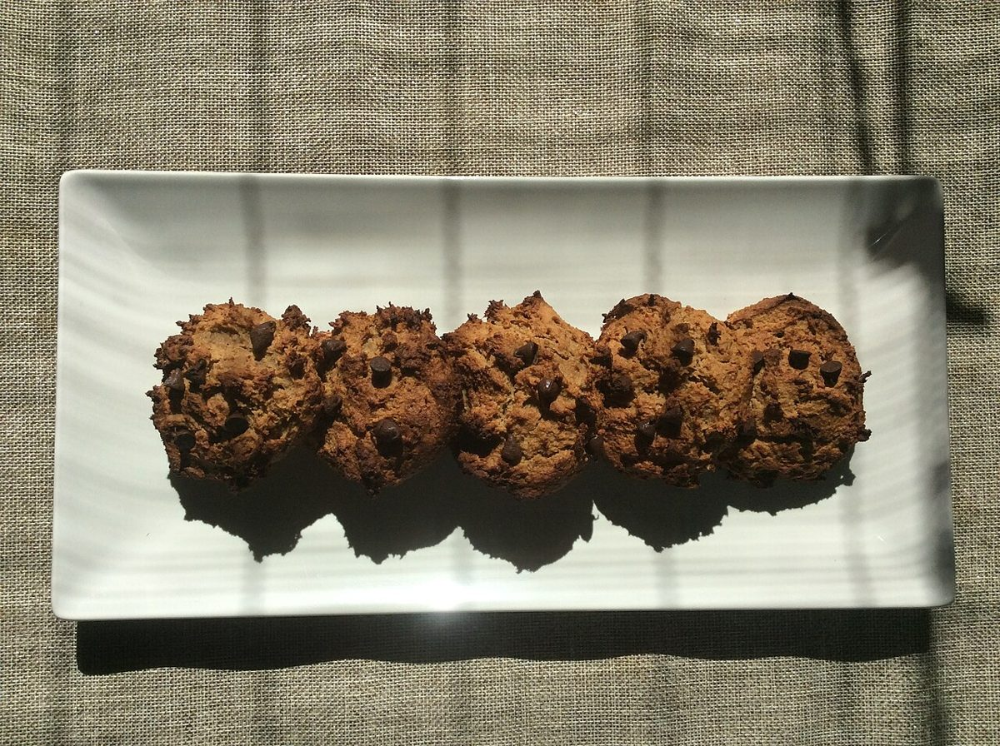
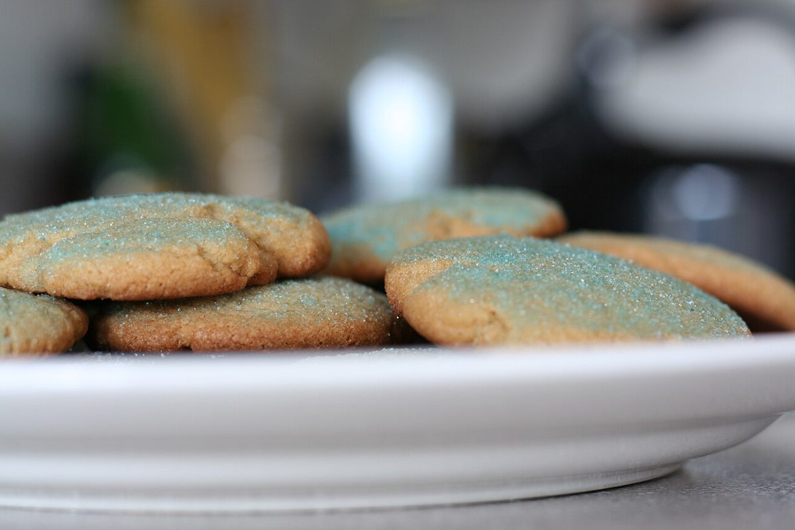
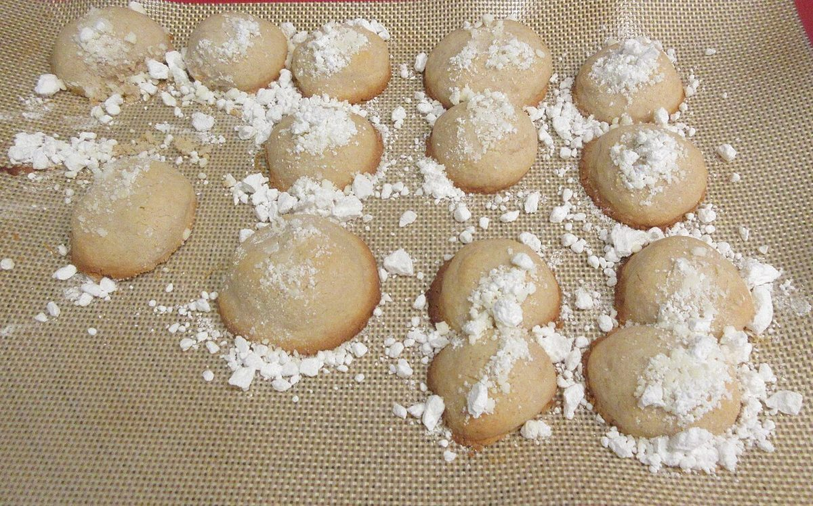

焼き菓子(クッキー)店 / 岩手県北上市
手作りクッキーの水曜屋
岩手県北上市二子町にある「手作りクッキーの水曜屋」のご案内ページです。営業時間やメニューなど詳しいことは準備中。お問い合わせは電話かInstagramで。
制作側の連想
七本の縞の、真ん中だけ太く。
屋号の「水曜屋」から、制作側は「一週間の真ん中」を連想しました。日曜から数えると、水曜は4番目。七曜のちょうど真ん中です。そこでこのサイトは、七本の縞のうち真ん中の一本だけを太くする作りにしました。お店の理念・由来とは無関係の、制作側の連想です。曜日と営業日の関係は分かりません(営業日は準備中)。
七曜の縞(イメージ写真)
日・月・火、水、木・金・土。
写真は曜日の飾りとして並べたフリー素材のイメージです。国外または撮影地不明のもので、実際のお店・商品ではありません。

日
月
火 水
水
木
金
土
- 日渦巻きと輪の形(撮影地不明)
- 月白い皿のクッキー(米国)
- 火四角いショートブレッド(米国)
- 水チョコチップ入りのクッキー(撮影地不明)
- 木長皿に一列(撮影地不明)
- 金青い砂糖のクッキー(撮影地不明)
- 土粉砂糖の丸いクッキー(米国)
ご案内
確認できているお店の情報
| 所在地 | 〒024-0104 岩手県北上市二子町宿西49-2 |
|---|---|
| 電話 | 0197-62-5816 |
| 営業時間 | 準備中 |
| 定休日 | 準備中 |
| ご予約 | 準備中 |
| 駐車場 | 準備中 |
| SNS | Instagram @suiyouya |